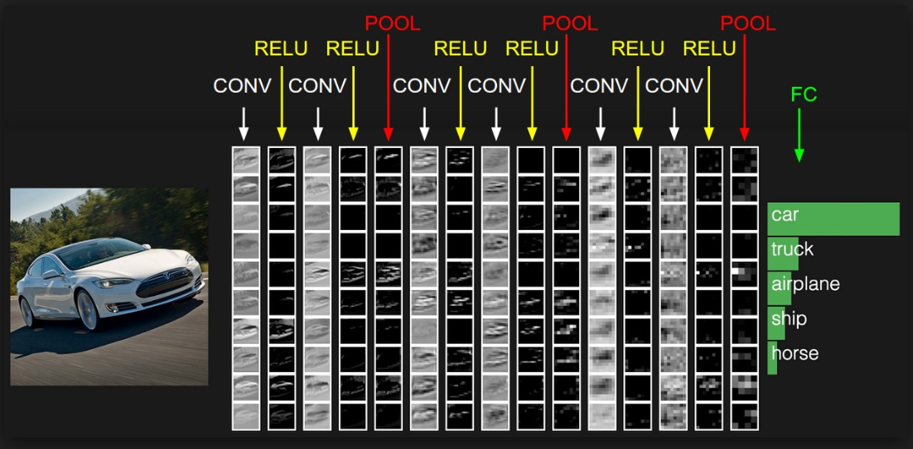
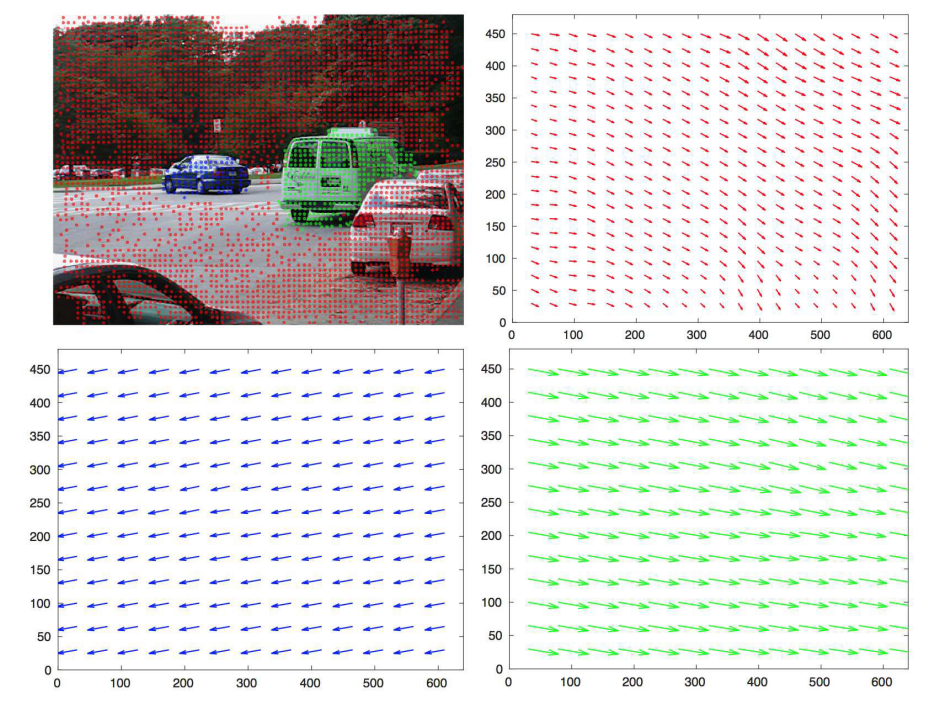

Vehicle Detection
An important task for an ADAS since analyzing traffic information facilitates for traffic control and management to ensure safety.[1]
- Vehicle Appearance - extraction based on symmetry, textures, colors and edges Detection using Appearance
- Vehicle Motion - extraction of vehicles based on properties of their motion [2] Detection using Motion Segmentation